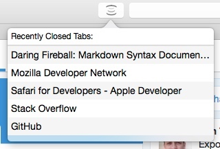

The Tab Restorer Safari Extension creates a button with dropdown menu to restore the last 5 closed tabs.
Tab Restorer is a Safari extension that provides a button in the Safari toolbar with the 5 most recently closed tabs allowing you to quickly restore them upon clicking each one.

Jeff Keeling